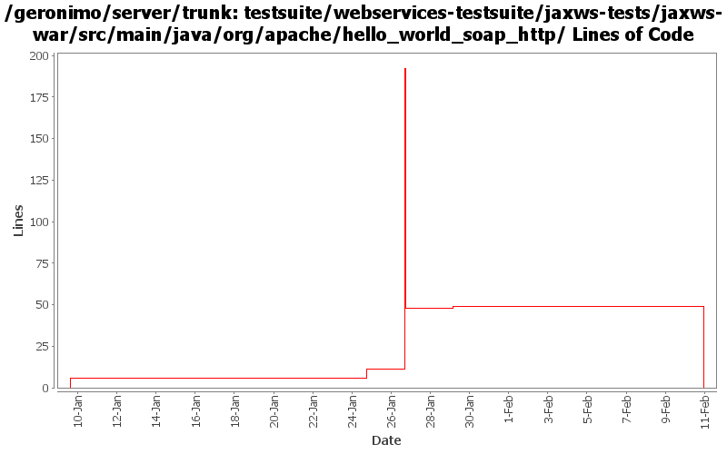

[root]/testsuite/webservices-testsuite/jaxws-tests/jaxws-war/src/main/java/org/apache/hello_world_soap_http

| Author | Changes | Lines of Code | Lines per Change |
|---|---|---|---|
| Totals | 14 (100.0%) | 205 (100.0%) | 14.6 |
| dims | 11 (78.6%) | 190 (92.7%) | 17.2 |
| djencks | 1 (7.1%) | 9 (4.4%) | 9.0 |
| prasad | 2 (14.3%) | 6 (2.9%) | 3.0 |
Make the test case reflect the wsdl being used by adding other methods mentioned in the wsdl. added a xjc task in the pom.xml to generate the types needed for the fault. Ran the existing tests with both axis2 and cxf. Need to add more tests for the newly added methods.
0 lines of code changed in 4 files:
Fix for GERONIMO-2783 - CXF-based WebServices support: webservices.xml file is no longer required
1 lines of code changed in 1 file:
remove duplicate code
0 lines of code changed in 1 file:
Fix for GERONIMO-2781 - Improved CXF-based POJO WebService support
0 lines of code changed in 1 file:
Fix for GERONIMO-2781 - Improved CXF-based POJO WebService support
144 lines of code changed in 2 files:
Fix for GERONIMO-2781 - Improved CXF-based POJO WebService support
45 lines of code changed in 2 files:
GERONIMO-2762 Update jax-ws tests, improve CXFWebServiceContainerFactoryGBean, thanks jarek
9 lines of code changed in 1 file:
* moved itests/cxfPojoWS/war to webservices-testsuite/jaxws/jaxws-war
6 lines of code changed in 2 files: